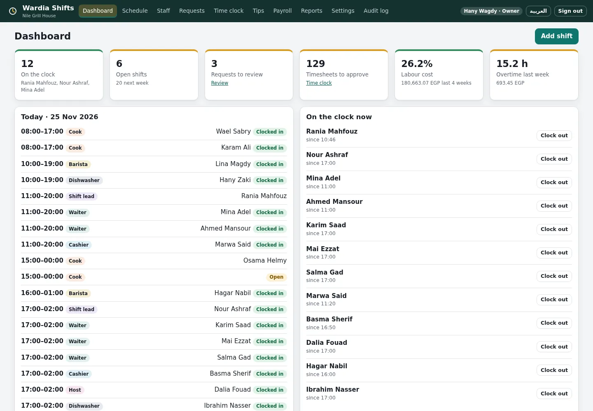
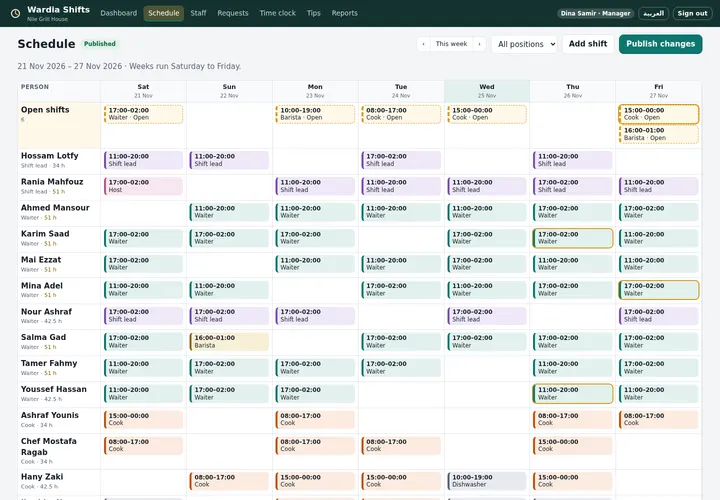
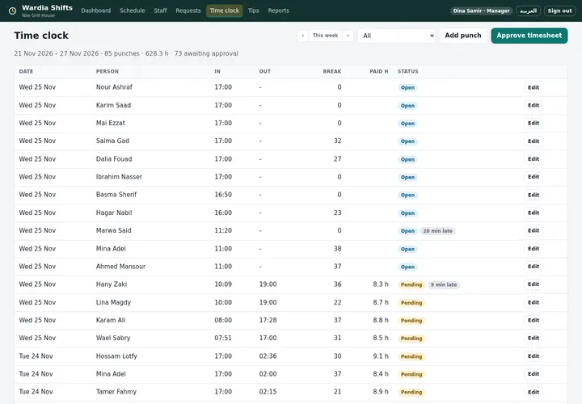
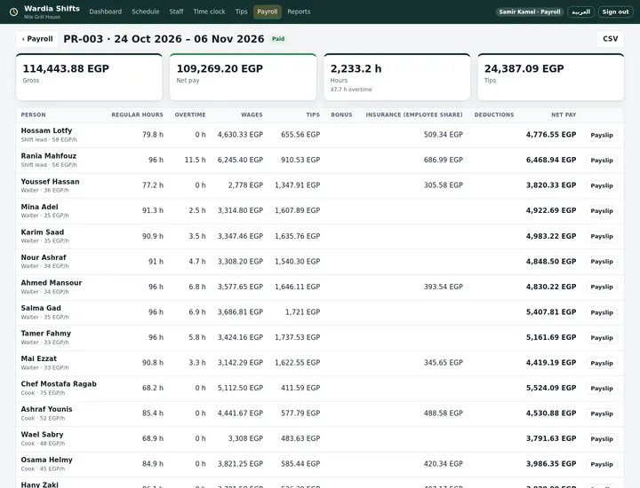
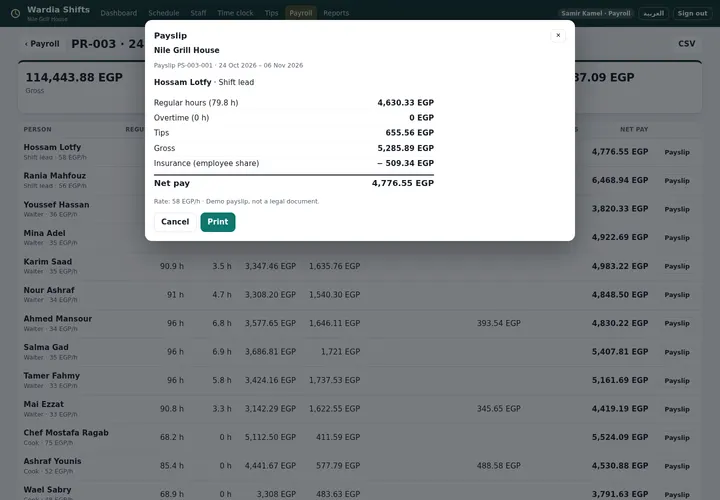
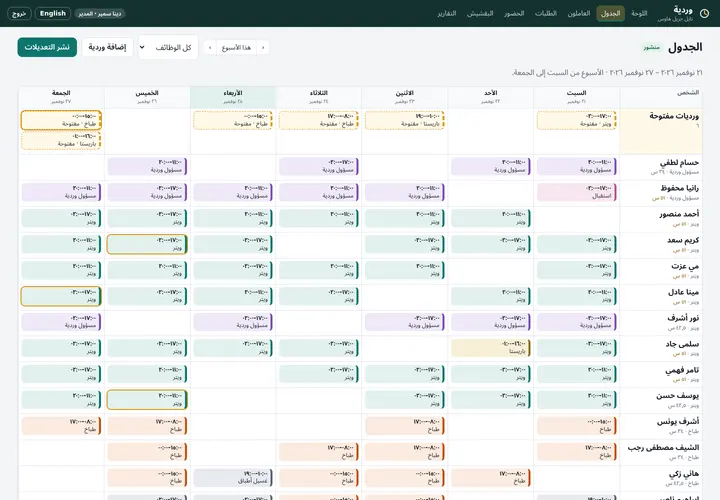
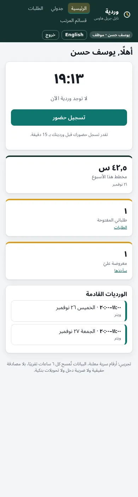

PORTFOLIO DEMO / BUILT / LIVE DEMO
Wardia Shifts
Every shift covered. Every payslip traceable to a punch.

ACTUAL BUILDWardia Shifts · Owner dashboard. Fictional restaurant and demo data.
The problem
A restaurant plans shifts on a WhatsApp group and a paper sheet. Swaps are agreed in chat and nobody records them. Hours are counted by hand at month end, overtime and tips are argued over, and the payslip is a number on a note.
What was built
A staff scheduling and payroll system with four roles. Managers build a Saturday to Friday week grid, and each person is checked against rules before a shift is given: position, time off, availability, overlap, rest between shifts and daily and weekly hour limits. Staff set their availability, ask for time off, give away or swap shifts with a colleague (the manager approves last) and claim open shifts. A time clock records breaks, lateness and forgotten clock-outs, with corrections that need a reason. Hours above 48 a week are paid as overtime. Tips are pooled per day and split by paid minutes and position weight, to the last piaster. The owner approves a payroll run, which locks the punches and tips in that period, and staff open their own payslip. Reports show hours, overtime, labour cost against sales, lateness and coverage, with CSV export. The interface works in Arabic (right to left) and English, and on a phone.
What changes for the restaurant
Before. Shifts live in a chat. Swaps are verbal. Overtime and tips are calculated by hand and disputed. Forgotten clock-outs are found at month end.
After. The same rules check every shift, swap and punch. Open shifts, overdue timesheets and expiring health cards are one short list. Tips and overtime are computed the same way every time, and an approved run cannot be changed by accident.
Why it matters to a restaurant owner
Labour is the largest controllable cost. Seeing overtime and labour as a share of sales each week, and having pay disputes answered from the punch record, saves time and arguments. These are the situations the demo is built to show. They are not measured results from a real restaurant.
The approach
No framework: plain JavaScript pages, one serverless API function and one logic file that holds every rule (schedule checks, swaps, punches, overtime, tips, payroll, privacy, reports). The same file runs in the API, the browser and the tests. Money is stored as whole piasters. Permissions are enforced on the server: the manager sees no pay rates and staff receive only their own data. The seed history is produced by running the same rules week by week, so the records always add up.
The result
A live demo anyone can open. Sign in as owner (PIN 1111), manager (2222), payroll (3333) or staff (4444); the PINs are on the sign-in screen. The sample restaurant has 26 employees in 7 positions, about 8 weeks of history and three paid payroll runs. Verification: 43 business-rule tests, plus a browser check that opens every page for every role in both languages against the live site and fails on script errors or broken text.
Evidence & production limits
One shared demo workspace: everyone sees and changes the same data. State is kept in server memory only, so it resets about every six hours and whenever the server instance restarts. Sign-in is a PIN printed on the sign-in screen, so it must not hold real staff or pay data. The restaurant, names, phones and amounts are fictional.
Known gaps: no database, no real authentication, the time clock is trusted self-service with no biometric or GPS check, overtime rate, insurance share and card tip fee are demo settings and not legal or payroll advice, no income tax, payment is recorded only with no bank or wallet payout, reminders open WhatsApp but nothing is sent automatically, hourly staff only, one restaurant and one currency. Direction, scope and delivery: Nada Gamal.
Next chapter
Real accounts, a database, device or location checks on the time clock, salaried staff, income tax and social insurance rules, bank or wallet payouts and automatic reminders would be the next implementation steps.
Inside the build
Open any preview to see the full capture. Captures show demonstration content, not evidence of client use.





